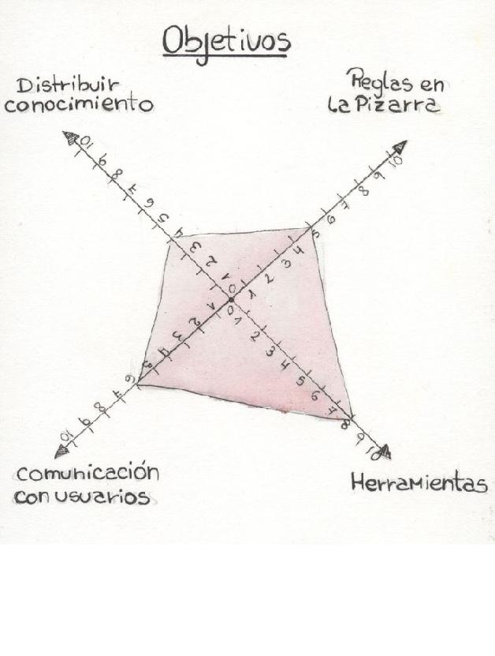

Estamos en una fecha cercana a finalizar la iteración 7 que tiene una duración de dos semanas. La revisión con el cliente está planificada para el próximo miércoles a las 9 de la mañana. Históricamente lleva cerca de una hora y media, y se espera lo mismo para esta ocasión. Recién terminó la reunión diaria. Pablo, que en la iteración pasada se definió como el próximo en coordinar la reunión retrospectiva, solicita colaboración del equipo para definir los objetivos y formato de la misma. Y propone los siguientes temas para los cuales encontrar mejores formas de trabajar:
• Documentación del código
• Reglas para la pizarra de tareas
• Comunicación con los usuarios
Para el desarrollo de la reunión sugiere hacer las siguientes actividades: checkin, radar, brainstorming, priorizar con puntos y objetivos SMART91
Nicolás, que estuvo investigando con Pablo algunas herramientas nuevas y cree que pueden ser de gran utilidad en el proyecto, sugiere cambiar la documentación por algo más abarcativo; y está de acuerdo con el resto. Marcio, que estuvo trabajando con un proceso muy complejo propone analizar como distribuir mejor el conocimiento de temas puntuales. Alejandro sugiere cambiar el ‘checkin’ que se hizo en la reunión pasada, por una actualización en los acuerdos de trabajo que desde el inicio no se modifican y alguna vez trajo algún conflicto.
Luego de esta conversación, que no se extendió más de 10 minutos, Pablo preparó la agenda y envió el siguiente mail a todo el equipo:
De: Pablo
Fecha: Lunes 09:47hs
Asunto: Retro Iteración 7
Para: Marcio, Carlos, Alejandro, Nicolás, Diego.
Estimados,
Les paso la agenda de la próxima retrospectiva del miércoles próximo de 11 a 13hs después de la revisión con el cliente (en la sala número 2):
Objetivos:
Encontrar formas para mejorar:
•Herramientas de desarrollo
•Reglas en la pizarra de tareas
•Distribuir conocimiento
•Comunicación con los usuarios
Agenda:
1) Repaso de la agenda y los tiempos, acuerdos de trabajo y su actualización -10 minutos
2) Poner información en común sobre los objetivos con un radar 15 min.
3) Brainstorming y causas raíz 45min
¿Qué se hizo bien y qué se puede mejorar y/o experimentar sobre los temas de los objetivos?
Meta a cumplir: 40 ideas entre todos.
4) Priorizar y decidir qué hacer, y quién 25min
Especificar planes (SMART). Definir responsables.
5) Cierre de la retrospectiva breve retro de la retro 15min
¿Qué se hizo bien y qué se puede mejorar del format de la retrospectiva?
Definir el próximo moderador.
Las reglas de la reunión (que definimos en la primer retrospectiva) son:
•Focalizar la conversación en los objetivos.
•Celulares en silencio.
•Cumplir horario, ser puntuales.
•Aceptar la opinión de cada uno sin juzgar o criticar.
•Evitar buscar culpables.
•Todos los participantes deben cumplir estas reglas y hacerlas cumplir, no solo el moderador.
•Las etapas de 1 a 5 son de tiempo fijo.
•El moderador guarda los resultados de la reunión al finalizar.
•Definir el próximo moderador al terminar.
En la historia anterior podemos ver como se organize una reunión para tratar los temas que se quieren mejorar, involucrando a todo el equipo, definiendo objetivos claros y estableciendo un tiempo de trabajo concreto, previo al comienzo de la nueva iteración. Se planificaron diferentes actividades para realizar en cada una de las fases de la reunión, y se acordaron reglas de trabajo que seguirán evolucionando.
Lo anterior fue un ejemplo de organización para llevar a cabo una reunión de mejora continua. Sobre estas ceremonias hablaremos en las secciones siguientes.
Introducción a las retrospectivas
La finalidad primordial de este capítulo es guiar a un equipo para buscar mejorar en su trabajo mediante reuniones retrospectivas. Haremos énfasis en su preparación y en especial en su proceso, porque es común que equipos con poca experi encia se reúnan improvisadamente solo con el fin de hacer mejor su trabajo. Así, se encuentran con reuniones sin preparación, aburridas, con acciones que no se llevan a cabo, perdiendo tiempo, preguntándose ¿qué pasó?, ¿por qué salió mal?, terminando en una decepción para los participantes y para el moderador.
En primera instancia vamos a introducir el concepto de retrospectiva92 como la forma ágil de aumentar el desempeño del grupo de trabajo en forma iterativa; básicamente es una reunión llevada adelante por el equipo, luego de finalizada una iteración o hito particular, en la que se busca cómo trabajar mejor. Y es importante remarcar que es el propio equipo el que se propone mejoras, y no una imposición de la dirección de la empresa o alguien ajeno.
Solo personas con voluntad, responsabilidad y compromiso con el trabajo se toman el tiempo para esto, lo que es destacable y respetable. Haciendo mención a palabras de Ron Jeffries, uno de los fundadores de Extreme Programming (XP), “Hay que mostrar respeto por los esfuerzos de la gente que quiere mejorar por cuenta propia”, por lo que, ante gente con esta buena predisposición, es recomendable que las empresas permitan y alienten este tipo de prácticas.
Las retrospectivas son una excelente oportunidad para lograr una mayor eficiencia en el corto plazo, y aunque requieren cierta preparación y dedicación, la relación costo beneficio de realizarlas es siempre conveniente mientras se hagan bien. Los casos en donde no se tienen buenos resultados se presentan al confundir el concepto y hacer retrospectivas para resolver cualquier problema: por ejemplo, no son para buscar culpables, ni para resolver inconvenientes personales entre miembros del equipo, ni para obligar a alguien a dar explicaciones o forzar a proponer ideas. Tienen otra finalidad. En casos de problemas personales entre miembros del equipo o de bajo desempeño de alguna persona en particular, se deben tratar en privado.
Norman Kerth, uno de los pioneros en el campo de las retrospectivas, propone que todos los participantes adhieran a lo que denominó Primera Directiva que dice así:
“Independientemente de lo que descubramos, entendemos y realmente creemos que todos trabajaron de la mejor forma que pudieron, dado lo que sabía cada uno en ese momento, sus habilidades y capacidades, los recursos disponibles, y la situación en cuestión” [Kerth 2001b].
De esta forma se busca eliminar los miedos a una reunión negativa con quejas y culpas, que claramente no ayudará al aprendizaje.
El marco de trabajo que propone Scrum93 se basa en tres principios: transparencia, inspección y adaptación. En particular, estas últimas dos actividades son las que guían a una retrospectiva para aplicarse sobre la conducta del equipo, sus herramientas, prácticas y toda tarea relacionada con el proyecto y las personas involucradas. Este ritual de la reunión retrospectiva, como lo es en Scrum, llevado adelante correctamente, genera mucho más valor que el que se espera al responder las preguntas: ¿qué hicimos bien y qué podemos mejorar?94
Las crisis y las retrospectivas
Durante el transcurso de un proyecto es muy difícil no pasar por problemas, conflictos o situaciones delicadas. Vamos a resumirlos con el término “crisis”, que aplica a todos ellos. Lo que uno generalmente desea luego de una crisis, es que no le vuelva a ocurrir ese malestar, las consecuencias, el sufrimiento o la dolencia; por eso, como una suerte de tercera ley de Newton aplicada –el principio de acción y reacción– ante una crisis, una persona busca una reacción opuesta para evitar que vuelva a ocurrir. En cambio, es poco habitual que uno analice acerca de lo que le pasó y cambie y adapte su comportamiento si no transitó por una crisis. Esa necesidad psicológica que se requiere para mejorar, el sentir la crisis, sentir que uno puede ser mejor, que puede superarse, no a otros, sino a uno mismo, con su equipo. Eso es lo que lo impulsa a uno al cambio.
Jeff Sutherland, cocreador de Scrum decía: “Necesitamos una ‘mente kaizen’95, un sentido interminable de crisis en la compañía para impulsar constantemente a mejorar”.
Así también, es oportuno conocer al menos una parte de las palabras que se le atribuyen a Albert Einstein sobre las crisis:
“No pretendamos que las cosas cambien si siempre hacemos lo mismo. La crisis es la mejor bendición que puede sucederle a personas y países porque la crisis trae progresos. La creatividad nace de la angustia como el día nace de la noche oscura. Es en la crisis que nace la inventiva, los descubrimientos y las grandes estrategias. [...] Es en la crisis donde aflora lo mejor de cada uno, porque sin crisis todo viento es caricia. Hablar de crisis es promoverla, y callar en la crisis es exaltar el conformismo. En vez de esto, trabajemos duro. Acabemos de una vez con la única crisis amenazadora que es la tragedia de no querer luchar por superarla”.
Las retrospectivas son una buena forma de responder ante la crisis. Veamos entonces su origen para luego entrar en el proceso y poder llevarlas adelante con un mejor entendimiento.
El origen
¿Por qué son ágiles las retrospectivas? Para entender de donde surge la idea hay que remitirse y analizar el último principio del manifiesto ágil, que expone lo siguiente:
“A intervalos regulares el equipo reflexiona sobre como ser más efectivo para a continuación ajustar y perfeccionar su comportamiento en consecuencia”.
Hagamos un breve análisis. Comparemos primero la idea de los intervalos regulares con los que tradicionalmente se hacen, en donde las reuniones de lecciones aprendidas se llevaban a cabo al finalizar un proyecto, con el fin de incorporar los resultados a una base de conocimiento y tenerse en cuenta para futuros proyectos dentro de la organización. De esa forma, las mejoras detectadas no permitían a un equipo crecer durante el proyecto. Recién se aprendía a mejorar cuando ya se había concluido el trabajo y, en muchos casos, desintegrado el equipo, lo cual es problemático en el caso de empresas orientadas a proyectos96. Tampoco tiene sentido dedicarle tiempo a analizar el comportamiento del grupo específico de personas en donde hay pocas garantías de que se mantenga unido.
El enfoque ágil es diferente: las personas son lo más importante, cada equipo de trabajo tiene su propia eficiencia y necesita analizarse dentro de ese contexto; esto no puede pasarse por alto. Es irracional tener que esperar a otro proyecto para incorporar nuevas prácticas, herramientas, habilidades, métricas, mejores formas de comunicación, otras maneras de hacer más eficiente o divertido el trabajo. El proyecto está activo, es hoy, hay que actuar en el corto plazo. No podemos perder la oportunidad de trabajar mejor, de entregar mayor valor, de ser más eficientes, de trabajar más orgullosos.
Tenemos que dedicarle tiempo a analizar como se está trabajando y poder mejorar de manera iterativa, porque lo que es conveniente hoy no necesariamente lo es mañana.
Comparemos y pongamos de ejemplo un proyecto de 6 meses. Tradicionalmente se realizaba una única sesión de lecciones aprendidas donde ya no se tendría la posibilidad de aplicar lo aprendido al proyecto post mortem; contra 12 retrospectivas de un proyecto ágil, si se hacen iteraciones de 2 semanas.
Asimismo, un estímulo para la motivación de cualquier persona es trabajar en un entorno que le permita buscar e implementar sus propias formas para mejorar y superarse, propias del equipo y no impuestas por otro sector, una gerencia o dirección.
El proceso
Como ya comentamos, si conducimos una reunión retrospectiva sin preparación y solo con idea de que los participantes respondan qué hicimos bien y que podemos mejorar, los resultados y el desarrollo de la reunión no serán los mejores.
Para organizar una retrospectiva, consideramos acertados los lineamientos que proponen Esther Derby y Diana Larsen en su libro Agile Retrospectives, making good teams great [Derby Larsen 2006]. Básicamente es un marco de trabajo compuesto por cinco partes, sobre las cuales nos apoyaremos para dar nuestra visión, opinión y otras alternativas que nos resultaron convenientes:
1. Establecer el escenario.
2. Reunir datos.
3. Generar entendimiento.
4. Decidir qué hacer.
5. Cierre.
Establecer el escenario
Este primer paso es para poner a todos los participantes en contexto (no en uno de información, esa es la segunda parte, sino en un contexto de focalización). Al no ser una tarea fácil, habitualmente, es una etapa que no se hace y saltea. Así se comete un error que se paga en las fases siguientes y se potencia a medida que es mayor la cantidad de integrantes.
Hacer foco significa dejar de lado distracciones (celular, notebooks, charlas con el compañero), concentrarse en ese tiempo y ese lugar para trabajar de manera sinérgica y cumplir con los objetivos de la reunión. Para esto es recomendable, en esta etapa de arranque, repasar la agenda de la reunión, las partes de la retrospectiva con sus tiempos, las técnicas y herramientas a utilizar, las reglas del equipo y algún ejercicio para romper el hielo. Es el puntapié inicial para lograr un clima grato en el que todos sientan ganas de participar.
En esta primera etapa se recomienda repasar las reglas autoimpuestas por el equipo que se deberán respetar durante la reunión. Si no existen, se pueden crear, y si las tienen, se pueden actualizar. Luego del acuerdo, no son opcionales. Todos deben cumplirlas y hacerlas cumplir, no solo el moderador. Un ejemplo puede ser el siguiente:
• Ser puntuales, cumplir con el horario planificado.
• Si bien se espera participación de todos, nadie está forzado a hablar; si alguien tiene mucho para contar, tampoco debe dominar la sesión.
• Focalizar la conversación en los objetivos.
• Celulares en silencio, monitores apagados.
• Aceptar la opinión de cada uno sin juzgar ni criticar.
• No buscar culpables.
Es recomendable imprimirlas o escribirlas en un costado de una pizarra para repasarlas al inicio de la reunión y que todos las puedan ver durante las retrospectivas: esto hace más fácil su cumplimiento.
Una de las tantas actividades que se pueden utilizar para entrar en clima y animar a todos a participar es el “checkin”. Consiste en que cada uno responda una pregunta en una o dos palabras, con el fin de entrar en confianza y permitir e incentivar la participación de todos, como se postuló en las reglas básicas. Por ejemplo: en muy pocas palabras, ¿qué esperas de esta retrospectiva? o ¿cómo te sentiste al finalizar la iteración pasada? o, para cada objetivo de la retrospectiva, ¿qué palabra describe el estado actual de cada uno? Otra posibilidad para responder es seleccionar entre opciones, por ejemplo: feliz, mejor, enojado, triste, disconforme. Tanto la pregunta como las opciones deben prepararse previamente a la reunión.
El “checkin” especialmente en equipos grandes resulta muy eficiente, se hace muy rápido, y da ánimo para empezar a participar. Crea un clima de grupo y permite entender el estado de ánimo al escuchar las voces de cada uno. Solo con este ejercicio se perciben las diferentes sensaciones de los participantes sobre el tema. Se mantiene la atención en el que está hablando y esperando el propio turno, haciendo foco en la reunión. Ese es el objetivo que queríamos cumplir.
Pero hay diversas actividades que se pueden utilizar en esta fase e incluso alguno con espíritu innovador pueden inventar alguna.
Ahora sí, repasamos la agenda, la estructura de la reunión, los tiempos, las reglas básicas y un ejercicio de participación; ya podemos pasar a la segunda parte.
Reunir datos97
Esta etapa puede parecer innecesaria porque uno tiende a creer que todos saben lo mismo sobre la iteración que acaba de finalizar. Pero no es así. Pongamos un ejemplo, en un equipo que recién terminó de hacer una revisión de una entrega importante con el cliente, el facilitador puede estar contento, y suponer que el resto también lo está, porque el cliente estuvo muy satisfecho con los incrementos en el producto, pero otro miembro del equipo puede estar molesto porque no hizo más que desarrollar código para la capa de presentación que no es de su agrado, y otro disconforme porque el software para el seguimiento de las tareas no es rápido ni provee toda la información necesaria para un mejor control.
Por lo tanto, no hay que suponer que todos cuentan con la misma información. Es clave, para mejorar, recolectar los hechos y los sentimientos, compartirlos y trabajar sobre todo el conjunto.
Se pueden hacer comentarios, escribir sobre la pizarra, utilizar papeles autoadhesivos, u otros métodos para recolectar información. Utilizaremos, a modo de ejemplo, la técnica del radar. Siempre haciendo foco en los objetivos. La técnica de “checkin”, cuando se hace sobre los objetivos, proporciona de forma muy rápida una visión cualitativa sobre lo que piensa cada participante sobre los temas que son propósito de la reunión. Por ejemplo, ¿qué te pareció la metodología en una palabra? y las respuestas: “bien”, “mejor”,“inadecuada”,“útil”. En cambio, la técnica del radar nos da información de manera cuantitativa, más precisa, cuánto mal: “4”, cuánto mejor: “8”, cuánto inadecuada, “3”, cuánto útil “10”. Primero se dibuja el radar en blanco, con los temas a analizar en cada línea, se explica la escala a utilizar, por ejemplo: de 0 a 10, números enteros, donde cero es lo mínimo, el peor valor, y 10 el máximo, la mejor puntuación.
Se puede hacer de dos formas. La primera, como una dispersión de puntos sobre el radar, donde cada persona dibuja un punto alrededor del número que elija para cada una de las líneas de temas. Funciona para equipos pequeños y medianos. En la segunda forma se tiene en cuenta solo el promedio. Se recolectan los valores de todos los participantes para cada uno de los temas y luego se marca sobre el radar el promedio para compartir los resultados y evaluar la medición conjunta. Esta forma es anónima, cada persona debe escribir en un papel el puntaje para cada tema y entregarlo al moderador que saca el promedio y anota los resultados. Esta segunda opción funciona para cualquier cantidad de personas aunque es especialmente recomendable para grupos numerosos. Es conveniente disponer de una calculadora y un colaborador que dicte los valores para sacar el promedio.
Figura 11.1. Diagrama radar.

Una vez marcado el promedio, se pueden unir esos puntos con líneas y pintar el interior para resaltar más el área. Los valores visualizados son los que surgen del equipo en conjunto que deberá proceder a analizar, enfatizando y celebrando los puntos fuertes y el área cubierta, y detectando posibilidades de mejora para las regiones no cubiertas.
Si el equipo no es muy numeroso y el tiempo para la retrospectiva no es muy ajustado, para complementar esta etapa, cada participante puede agregar notas adhesivas con información sobre cada tema para generar una imagen global diversificada que contenga todos los puntos de vista.
El radar fue solo un ejemplo porque existen numerosas actividades que se pueden hacer en esta fase. Otra técnica, mucho más simple, es preguntarse ¿qué hicimos bien? Y ¿qué podemos mejorar? Hay que destacar que en la segunda pregunta se hace foco en la mejora y no se formula desde una visión negativa. Por eso es importante que el moderador explique que esos temas hay que verlos como algo positivo porque el equipo pretende modificar para ser mejor. Se debe tener en cuenta que en esta fase hacemos foco en el “qué”, ya que el “por qué” y el “cómo” se analiza más adelante.
Lo importante que queremos destacar aquí es poner la información en común, para poder trabajarla de fondo entre todo el equipo en la fase siguiente.
Generar entendimiento
En esta etapa el equipo debe evaluar los datos de la fase anterior y preguntarse por qué esos temas no anduvieron bien y así llegar a encontrar las causas raíz de los problemas y proponer cambios. También se trabaja sobre los riesgos y se busca reconocer patrones que llevaron a hechos positivos y negativos.
Varias son las actividades que se pueden realizar en esta fase y no es el objetivo entrar en detalle. Lo importante es comprender la esencia de esta etapa, por lo tanto, solo veremos unos ejemplos.
La actividad más común es el Brainstorming. La intención es generar muchas ideas sobre los objetivos de la reunión. Una buena forma es poner una meta de mínimo (por ejemplo: 40 ideas en el tiempo planificado).
Se puede hacer en un formato libre, en donde cada uno participa a medida que lo desee, o de manera ordenada comenzando por una persona seguida por el contiguo. El formato libre es más común, pero puede dejar fuera a gente con menor tendencia a participar en público, y así perder importantes ideas. En ese caso, el moderador puede invitar a participar a quienes no lo han hecho o cambiar al otro formato.
Es una buena práctica también comenzar con unos minutos para pensar en silencio. De esta manera cada uno va anotando sus ideas, para luego empezar a exponerlas sabiendo que todos al menos disponen de algunas.
Las ideas se escriben resumidas en notas adhesivas y se pegan en una pizarra, donde cada persona la explica brevemente y la coloca a la vista de todos. De acuerdo con la cantidad de gente o conveniencia, estas últimas tareas las puede hacer el moderador.
El moderador o los mismos participantes pueden agrupar las ideas según tengan una afinidad, relación o patrón. Esto también va a servir para priorizar mejor en la fase siguiente.
Uno de los beneficios de esta técnica es la posibilidad de construir nuevas ideas sobre ideas de otros. De no ser así, muchas nunca van a ocurrir. Es aconsejable también, previo al inicio de la actividad, que el moderador mencione y anote en la pizarra las reglas del Brainstorming. Un ejemplo podría ser:
• Mínimo 40 ideas.
• Todas las ideas son buenas.
• No filtrarlas.
• Construir sobre ideas de otros.
• No criticar.
• Se espera participación de todos.
Otra técnica que funciona como complementaria es la de los cinco por qué98. Consiste en preguntarse varias veces el por qué algo está ocurriendo para así llegar a la causa raíz en la quinta respuesta como máximo. Se puede utilizar sobre los resultados de alguna actividad de la fase anterior o sobre el Brainstorming, especialmente en los puntos a mejorar. Pongamos un ejemplo:“esfuerzo adicional por cambios frecuentes en la interfaz de usuario”, nos preguntamos:
1) ¿Por qué hay cambios frecuentes en la interfaz de usuario? Porque cuando el cliente ejecuta el sistema en la demo casi siempre pide cambios.
2) ¿Por qué no propone los cambios cuando se valida la funcionalidad antes de su desarrollo?
Porque las historias de usuario y los criterios de aceptación en general están bien, siempre pide cambios en tipos de controles, tamaños, imágenes, navegación.
3) ¿Por qué no puede validar los controles, tamaños, imágenes?
Porque no tiene prototipos para hacerlo, solo el sistema al terminar la iteración.
4) ¿Por qué no hacemos prototipos de pantallas? Porque no los tuvimos en cuenta en las tareas ni en la estimación en la reunión de planificación. ¡Incluyámosla para la próxima iteración!
Ya identificados los problemas con sus causas raíz, podemos pasar a la próxima fase y establecer acciones concretas para mejorar.
Decidir qué hacer
En esta etapa hay que determinar las tareas, acciones o experimentos resultantes de la etapa anterior que se van a llevar a cabo durante la próxima iteración, quién y cómo lo va a hacer. En el caso particular de que sea una retrospectiva de fin de proyecto serán cambios para documentar e implementar en nuevos proyectos.
Es una fase que consta de una primera parte de priorización y una segunda de planificación de los pasos a seguir para cada acción de mejora. En la priorización, el equipo debe decidir que propuestas se consideran más importantes y las que más se desean llevar a cabo, teniendo en cuenta la relación costo beneficio.
Una actividad para votar las preferencias es la de priorizar con puntos que cada participante dispone para asignar a las propuestas. La cantidad de votos debe ser un número fijo, que en general va de un tercio a la mitad de la suma del total de las ideas a escoger. Cada uno va asignando puntos a su gusto sobre la pizarra sin pasarse de esa cantidad. Se puede hacer una restricción adicional; por ejemplo, no poner más de dos votos sobre una misma idea.
A la hora de tomar las propuestas que se identificaron como las prioritarias en orden para ejecutar, es importante no sobrecargar al equipo, haciendo solo algunas. Si se seleccionan demasiadas difícilmente se puedan cumplir. Hay que tener en cuenta que estas tareas se sumarán a todas las de la propia iteración para seguir construyendo sobre el producto. Si se seleccionan demasiadas actividades de mejora y luego solo se pueden llevar a cabo algunas pocas, el equipo en cierta forma se frustra y se genera una sensación de desconfianza en las retrospectivas. Por eso hay que elegir pocas o alguna estrategia que permita realizarlas, por ejemplo, una para cada integrante.
Ahora bien, una vez que tenemos la lista priorizada, no conviene quedarse solo con las ideas de mejora, sino que hay que llevarlas a acciones concretas. Esto va a ayudar a que sea más probable que se cumplan. Por ejemplo, utilizando la técnica de objetivos SMART (por sus siglas en inglés) donde se busca que los objetivos sean: específicos, medibles, alcanzables, relevantes y oportunos. Por ejemplo, no es lo mismo quedarse con la propuesta: “hay que automatizar pruebas funcionales”, que definir en conjunto con el equipo: “Diego automatizará las pruebas del módulo 1 y Carlos las del módulo 2 durante la semana próxima. Se utilizará la herramienta Selenium. El martes se realizará una demostración interna para evaluar los resultados”.
Finalmente, las acciones priorizadas y detalladas se deben planificar al comienzo de la siguiente iteración al igual que se hace con las user stories. Las acciones remanentes con menor priorización no se deben descartar, sino que se pueden tener en cuenta en la próxima retrospectiva99.
Cierre
La fase de cierre se centra básicamente en hacer un muy breve análisis de la retrospectiva, guardar los resultados de la reunión y agradecer el trabajo realizado.
La actividad más utilizada para evaluar la retrospectiva consta en que el equipo debe indicar qué cosas estuvieron bien y las que se pueden mejorar para la próxima reunión. Pueden ser críticas constructivas sobre el formato, los tiempos, las actividades realizadas o cualquier otro factor. El ejercicio se puede hacer sobre una pizarra dividiéndola en dos, y el equipo va agregando las opiniones para estas dos categorías en forma ordenada o libre.
Al ser el cierre de la etapa final, y por lo tanto, la candidata a sufrir algún recorte de tiempo si alguna de las fases anteriores se extendió, se puede practicar una alternativa en el caso de que el equipo sea relativamente pequeño, llevando a cabo el ejercicio de pie rodeando la pizarra. En general, de esta forma se acelera el procedimiento y el equipo se siente cómodo por ser una práctica utilizada en las reuniones diarias. Es importante que el moderador anote las sugerencias.
Para finalizar y luego de los agradecimientos por el esfuerzo y la participación a todo el equipo, no hay que olvidar tomar una fotografía de las pizarras con los gráficos y tareas resultantes de todo el proceso.
Recomendaciones complementarias
Si bien en las secciones anteriores fuimos describiendo prácticas que consideramos recomendables, a continuación complementamos algunas ya vistas y aconsejamos otras que ayudarán a lograr una mejor retrospectiva.
Ambiente seguro
Para obtener una buena participación, y por lo tanto, buenos resultados, es necesario propiciar un ambiente seguro y cómodo pues durante la reunión retrospectiva no se están haciendo evaluaciones de desempeño. Tampoco se hace para reportar a una gerencia o dirección. Es un momento y un lugar en donde el equipo puede discutir libremente.
Lugar cómodo y diferente
Es recomendable salir del puesto de trabajo habitual para escapar a la rutina y crear un ambiente más recreativo. En general para las retrospectivas no es necesario utilizar grandes mesas, sino que es más conveniente orientar la disposición de las sillas en forma semicircular en donde todos tengan acceso a la pizarra, ver al resto de los participantes y escucharse sin dificultades.
Comida
No estamos hablando de un gran banquete que invite a que la gente se disperse, pero unas galletitas acompañadas de café o alguna otra infusión a gusto, son un buen comienzo para llevar adelante una agradable y positiva reunión.
Alternar el moderador
Es una buena práctica rotar al moderador, no siempre tiene que ser el que tiene el rol de facilitador del equipo, siempre y cuando haya otros voluntarios. Es un factor motivante tener la posibilidad de tomar el rol para quien le interese y, por otro lado, hace más divertida la reunión.
Nuevas actividades
Es aburrido ir a reuniones predecibles donde siempre se hace lo mismo. Por eso, no es recomendable repetir siempre el mismo formato más de dos o tres veces con el mismo equipo de trabajo. En las secciones anteriores se comentaron algunas actividades que se pueden hacer en cada una de las cinco fases de una retrospectiva100. Hay que animarse a probar nuevas alternativas.
Ayudar a la imaginación
Dependiendo del tipo de retrospectiva y la dinámica con que viene trabajando, puede ser conveniente que el equipo llegue con una mínima preparación a la reunión, una lista de temas o ideas pensadas y anotadas. Luego de una larga iteración, o si no se hacen retrospectivas a menudo, a veces se olvidan los temas que fueron sucediendo y no se recuerdan rápidamente durante la reunión. Por ese motivo se puede ayudar a recordar si se utiliza una lista de categorías o áreas en las que se puede hacer foco, por ejemplo: herramientas, comunicación, documentación, cliente, proceso de desarrollo, testing, hardware, calidad, riesgos, alcance, metodología, capacitación, configuración. El listado se debe enviar a todos los participantes en conjunto con la agenda, en especial si el objetivo es libre.
La mejora es día a día
La retrospectiva no debe ser un espacio para la resolución acumulada de problemas. Ante la aparición de un inconveniente o impedimento, e incluso mejoras, se debe tratar de resolver a tiempo. En caso contrario, el impacto puede ser mayor. Por otro lado, si surgen muchos problemas que resolver, seguramente no se solucionarán todos en la próxima reunión retrospectiva. La mejora continua no sólo se da en estas reuniones, sino que se construye día a día.
Moderador externo
Hay ocasiones en que es conveniente que el moderador no sea parte del equipo de trabajo, ya que puede generar influencias o estar influenciado por otros participantes. Esto puede ocurrir cuando forman parte de la reunión personas con diferentes puestos. Por otro lado, la participación de un moderador externo puede resultar motivante y entretenida en casos de proyectos con muchas iteraciones, en donde esa tarea siempre la hicieron las mismas personas.
Usar retrospectivas anteriores
Como parte de la agenda, se puede destinar un tiempo para ver el estado y los temas de retrospectivas anteriores. Casi nunca se llegan a resolver todos los puntos de acción en la iteración siguiente en que se detectaron, y ese trabajo no hay que desaprovecharlo.
Preparar la reunión
Organizar la reunión, preparar los materiales, enviar la agenda.Todo esto es un buen signo de respeto por el tiempo de los demás. Asimismo, una mejor preparación va a dar mejores resultados.
Trabajo en equipo
Los objetivos se deben preparar en conjunto con el equipo de trabajo antes de enviar la agenda. Consultar a los participantes si les parece bien el formato y las actividades propuestas es parte de la tarea del organizador. Desde ya que pueden surgir cambios y hay que estar dispuesto a recibirlos y adaptarlos.
Resumen
Las retrospectivas representan una instancia de mejora continua, la más formal y poderosa, en el sentido de que es una reunión que requiere preparación, sinergia de todo el equipo y debe ejecutarse entre iteraciones.
Para lograr resultados excelentes es esencial entender cada una de las partes que conforman la reunión y preparar las actividades a realizar, sin saltear etapas.
Es importante tener en cuenta varios factores para organizar y llevar adelante la reunión: las características del equipo y su aporte en la preparación, las emociones, el tamaño de las iteraciones, un ambiente seguro, no buscar culpables, no criticar ideas, rotar el moderador, definir reglas; son algunos de los ingredientes básicos.
91 Del inglés: Specific, Measurable, Attainable, Relevant, Timely.
92 El término ‘Retrospectiva’ fue inicialmente utilizado por Norman Kerth en Project Retrospectives: A Handbook for Team Reviews [Kerth 2001a] y se hizo popular y aceptado por la comunidad con el uso de Scrum.
93 Véase Apéndice: La riqueza de la diversidad en el cual se explica en más detalle Scrum.
94 En [Schwaber 2004] donde Ken Schwaber explica Scrum y define una reunión retrospectiva, indica que se deben responder esas dos preguntas de la última iteración o Sprint.
95 Kaizen: “cambio a mejor” o “mejora” en japonés, el uso común es “mejora continua”.
96 [PMBOK4] pag. 28, sección “2.4.2 Estructura Organizacional” se definen tres tipos: Funcional, Matricial y orientada a Proyectos. En estas últimas las personas no tienen un lugar al que pertenecen una vez terminado el proyecto, sino que quedan a la espera del siguiente. A diferencia de las funcionales, en donde, por ejemplo, un área de Marketing, permanece más allá de un proyecto.
97 Una buena práctica es aprovechar este momento para evaluar las acciones de mejora comprometidas en la retrospectiva anterior y evaluar si se hicieron o no y cuales fueron los resultados obtenidos.
98 Esta técnica de análisis de causas raíz puede complementarse con un diagrama de espinas de pescado o diagrama de Ishikawa.
99 Puede considerarse y administrarse como un backlog de mejoras, o incluso incorporarse al backlog del proyecto.
100 Para profundizar en las actividades y detalle de cada una véase Agile Retrospectives, making good teams great [Derby Larsen 2006]